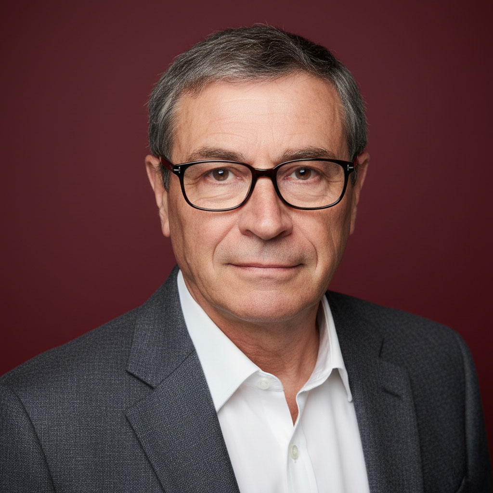

It is an honor and a great pleasure to preface this web site which Dany Bréelle have dedicated to French toponyms bestowed on Australian coasts during two voyages of exploration. I take this opportunity to thank her for the approach she has taken in highlighting some little-known aspects of France's contribution to the completion of a map of the world, particularly in confirming that Australia was an island continent, and in providing historical background to the naming of hundreds of localities by the visitors. I also value their study in the context of the history of French exploration in the Pacific region and the light it sheds onto aspects of the early history of Australia.
In the second half of the 18th century, the French and the British organised maritime voyages to discover one of the last great and then still largely unknown geographical areas of the globe, the Pacific and its southern continent. Commissioned by the state authorities of France or Great Britain, the scientific expeditions of Bougainville (1766-1769), Cook (1768-1771), Lapérouse (1786-1788), d'Entrecasteaux (1791-1793/94) and Baudin (1800-1804) were the expression of this quest of an idealistic unified intellectual and scientific space without borders. Hence, Cook's scientific mission was considered by the French king Louis XVI as benefiting humanity and as such would receive assistance from the French Navy in case of need.
The great explorers Bougainville and Lapérouse left an unforgettable mark on the culture and imagination of the European Enlightenment. The brief visit of Jean-François de Lapérouse to Botany Bay has left a lasting impression on the minds of both French and Australian citizens for generations. The frigates l'Astrolabe and la Boussole entered the harbour only six days after the arrival there of the First Fleet of 11 ships commanded by Captain Arthur Phillip, who would establish the first settlement in New South Wales. Lapérouse remained at Botany Bay for six weeks before setting sail on his final voyage to the islands in the western Pacific which ended in the tragic loss of both vessels following a shipwreck. It has been my pleasure to contribute, as director of the Musée National de la Marine, to the establishement of the Lapérouse Museum in Botany Bay, which opened on the 23 February 1988, and where almost 2,000 items exhibited in several rooms, document the 1787–1788 expedition of the French explorer.
It was the unexplained disappearance of Lapérouse which prompted France's National Assembly in1791 to authorize the dispatch of an expedition in search for him. Its commander Bruni d'Entrecasteaux was also directed to give particular close attention to the southern coasts of New Holland and to Van Diemen's Land. The expedition's first engineer-hydrographer Beautemps-Beaupré (1766-1854), who had previously been involved in preparing the maps needed for the La pérouse expedition, charted parts of these southern coastlines and established hydrography as an exact science, based on rigorous mathematical and geometric theorems and principles and the use of high-performance instruments such as the Borda's circle of reflection to produce accurate maps. Beautemps-Beaupré in his work drew on the practice of the Reverend John Mitchell and the first Hydrographer of the British Admiralty, Alexander Dalrymple, whose method he perfected. Known as the method of the capable arcs, it identifies the precise position of ships. The expedition's officers or geographers chose two points on the horizon (a cap, a hill, etc.) and measured the angle between these two points. By plotting on a chart, the circular arc corresponding to these two points and the measured angle, they found the circular arc segment on which their boat was located. By repeating the same operation with two other points, they obtained a second circular arc. The ship's position was then precisely at the intersection of these two segments of arcs! In Beautemps-Beaupré's appendice 'exposé des méthodes employées pour lever et construire les cartes et plans' published with the atlas of the d'Entrecasteaux voyage, he gave a specific explanation of the principle of the capable arcs as applied to hydrography. He was then entrusted by the government with the most important hydrographic missions: the hydrographic survey of the European northern coasts of the Napoleonic empire in 1811, and in 1815, with that of the western coasts of France, resulting in the publication of the Pilote francais, in six volumes. This work won the admiration of the British and Irish hydrographer Sir Francis Beaufort. Beaufort who praised M. Beautemps-Beaupré as being 'the first hydrographer of his time for the 'admirable precision' he brought to every detail of his work.
It was this degree of precision that influenced Louis Freycinet, the editor of the atlas of Nicolas Baudin's voyage, of which he was one of the most active officers. Baudin's mission was to reconnoitre the partly unknown South coasts of Australia and collect specimen of plants, minerals and animals from the coastal sections visited by the savants. The expedition discovered and named important parts of the Australian coast. In fact, the Baudin Expedition collected more than 100,000 specimens in Australia, the largest collection of natural history samples to reach France and to enrich its museums. It is precisely the excellence of the discovery work of Baudin's expedition as well as that of d'Entrecasteaux, both in the field of nautical cartography and in that of the natural sciences, which Dany Breelle helps us to discover and understand in an illuminating way in their descriptions of place names and the illustrations that accompany them.
In the aftermath of the Napoleonic Wars, two former officers of the Baudin expedition, Louis Freycinet and Hyacinthe de Bougainville, and other officers of the French Navy took part in the revival of the tradition of great voyages of discovery which the wars in Europe had halted. Freycinet embarked on a voyage of circumnavigation aboard l'Uranie and la Physicienne (1817-1820), during which he revisited the Australian coast, while Hyacinthe de Bougainville in command of la Thétis circumnavigated the globe from March 1824 to June 1826. The latter commissioned monuments in memory of Lapérouse and Friar Pere Receveur (a Franciscan scientist with the Lapérouse expedition who died at Botany Bay in 1788) to be erected at today's Sydney suburb of 'La Perouse', close to the site where Father Receveur was originally buried.
In total, no less than eleven French expeditions visited the Pacific during the reigns of Charles X and Louis XVIII, with, including the voyages of Duperrey on la Coquille (1822-1825), Auguste-Nicolas Vaillant on La Bonite (1836-1837), du Petit-Thouars (or Dupetit-Thouars), on the frigate La Vénus (1836-1839), Dumont d'Urville on l' Astrolabe (1826-1829) and, later, on l'Astrolabe and la Zélée (1837-1840). On this last voyage, Dumont d'Urville set out from Hobart for the polar regions, where he discovered and took possession of Terre Adélie on behalf of France. Dumont d'Urville's land claim marks a change in French maritime strategy from the 1840s onwards, when, after the annexation of New Zealand by Great Britain, the French presence in the Pacific became increasingly part of a competition for territorial and colonial conquests and the establishment of colonial empires by European nations.
However, despite the colonial and geostrategic rivalries that increased in the Pacific during the 19th century, it was in a spirit of great fraternity and mutual esteem between the French and British navies that hydrographers like Beautemps-Beaupré and Beaufort, and officers of the British and French Navies who were versed in the sciences exchanged their knowledge. It was in this same fraternal spirit that I had the privilege, under the auspices of the French Association Terra Australis chaired by our former Prime Minister Michel Rocard, to attend the commemoration of the bicentenary of the meeting of Nicolas Baudin and Matthew Flinders at Encounter Bay in 1802. Both captains were charged with the tasks of scientific and geographical exploration and determined to map the Southern continent. This historic event was celebrated in Adelaide, Victor Harbor and Kangaroo Island, and at sea as well. Among a gathering of Australian, British and French ships, a small memorial pyramid enclosing testimonies and signatures was submerged at the very place where the meeting of the ships le Géographe and HMS Investigator took place. The bay is now known as 'Encounter Bay'.